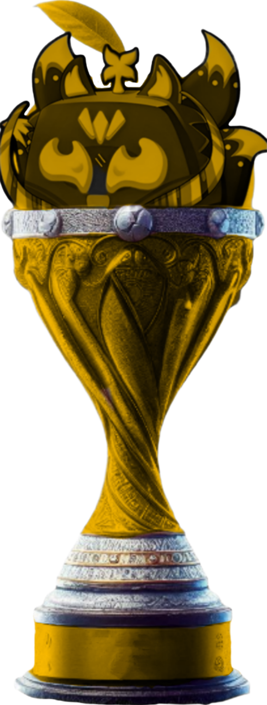

O Sorteio da Kitsune será feito no discord clique em um dos troféus para ser mandado para lá e fazer parte do sorteio.
04/02/2025
04/02/2025
O Pagoneio é um torneio de PvP valendo uma fruta no jogo Blox Fruits, realizado no Coliseu com um formato de mata-mata, similar ao futebol.
Para participar, clique nos troféus acima. Eles o levarão ao nosso servidor do Discord, onde as competições são organizadas.
Cada partida será disputada em um formato de melhor de três (MD3).
Não é permitido o uso de cheats, hacks ou qualquer forma de trapaça.
Respeito entre os participantes é obrigatório. Insultos ou comportamentos inadequados resultarão em desqualificação.
As Batalhas deverão ser feitas em 1v1 no Coliseu do 2 ou 1 Sea
terá o tempo limite de 3 minutos cada batalha ( fase de grupos ) 5 minutos as oitavas 7 minutos semis e final.
É proibido o uso de Transformação de Frutas ( exceto a Buddha )
O Uso da V4 só é permitida se os dois Participantes tiverem e se for a Última rodada no melhor de 3.
Fase de Grupos: Todas as 8 equipes de 4 jogadores jogam entre si dentro do grupo. As duas melhores avançam. Eliminatórias: Sistema de eliminatória simples. Perdeu, está fora! Melhor de três (MD3) Grande Final: Melhor de Cinco (MD5) para determinar o campeão.
1º Lugar: Fruta do Torneio + Memorial + Vaga para a Super Pagoneio
[2023] A primeira edição aconteceu em dezembro, valendo a fruta Rumble. Esperávamos 32 participantes, mas apenas 6 compareceram e 4 competiram, com Thz, um usuário de kitsune, sendo o campeão.
[1-2024] A edição do primeiro trimestre de 2024 valeu a fruta Control. Tivemos 8 participantes, com as quartas de final sendo disputadas, e Blitz foi o campeão.
[2-2024] A edição ira acontecer em Dezembro de 2024..
A Super Pagoneio é uma disputa entre o campeão atual e o campeão anterior. Apenas uma pessoa pode possuir este título, ou seja, o campeão atual.
O primeiro campeão da Super Pagoneio foi Blitz, por W.O., devido a Thz, o primeiro campeão, ter passado a vitória para ele. (1-2024)
Thz | 2023
Blitz | 1-2024
O PvP no Blox Fruits é um dos maiores desafios que o jogo oferece. Ele vai muito além de simplesmente ter uma fruta lendária ou equipamentos poderosos. Vencer no PvP exige prática, estratégia, conhecimento do jogo e muita paciência. Neste guia completo, você encontrará tudo o que precisa saber para melhorar suas habilidades e dominar o campo de batalha, seja para defender sua tripulação ou derrotar seus oponentes em disputas épicas.
A escolha da fruta é um dos pontos mais importantes no PvP. Cada fruta tem habilidades únicas que podem se adaptar melhor ao seu estilo de jogo. É essencial entender como cada fruta funciona e quais delas são mais eficazes no combate. Aqui estão algumas sugestões: Frutas para jogadores agressivos: Se você gosta de causar muito dano e pressionar o adversário, frutas como Leopard, Dough e Dragon são ideais. Elas possuem habilidades devastadoras com excelente alcance e dano. Frutas para jogadores defensivos: Frutas como Buddha e Phoenix são perfeitas para quem prefere resistir mais tempo no combate. Buddha oferece um aumento de resistência e alcance, enquanto Phoenix permite regeneração de vida durante a luta. Frutas de controle e estratégia: Se você prefere manipular o campo de batalha, as frutas Portal e Shadow são excelentes escolhas. Portal permite teletransportar e criar confusão, enquanto Shadow tem habilidades que drenam e controlam a movimentação do inimigo. Dica: Antes de investir tempo e dinheiro em uma fruta, teste-a em lutas casuais para ver se combina com o seu estilo.
A sua build faz toda a diferença no PvP. Uma má distribuição de pontos pode prejudicar muito o desempenho, mesmo se você tiver itens e frutas poderosas. Aqui estão os principais atributos para considerar: Melee: Invista aqui para ter energia (Stamina) suficiente para spammar habilidades e usar movimentos de esquiva, como Geppo e Dash. Defense: Garantir que você tenha um bom HP é fundamental, principalmente contra inimigos que conseguem prender você em combos mortais. Blox Fruit: Se sua fruta for sua principal fonte de dano, maximize este atributo. Frutas como Dragon e Dough se beneficiam muito disso. Espada ou Gun: Se você usa armas como True Triple Katana ou Kabucha, é essencial investir pontos aqui para maximizar o dano. Dica: Focar em apenas dois atributos principais é geralmente a melhor estratégia. Por exemplo, uma build baseada em Melee e Defense para usuários de Buddha, ou Blox Fruit e Defense para usuários de frutas ofensivas.
O movimento é tão importante quanto a sua build e as suas habilidades no PvP. Um jogador com boa mobilidade pode facilmente evitar combos e contra-atacar com precisão. Aqui estão algumas dicas para melhorar sua movimentação: Dash e Geppo: Use constantemente para evitar ataques diretos. Misture Dash e Geppo de forma imprevisível para confundir o inimigo. Haki da Observação (Ken Haki): Ative seu Ken Haki para esquivar automaticamente de ataques. Ele é especialmente útil contra combos de frutas como Dough e Dragon. Controle do campo: Nunca fique parado ou previsível. Movimente-se lateralmente e use o terreno a seu favor para criar oportunidades de ataque. Exemplo prático: Contra frutas como Leopard, que possuem ataques rápidos, o movimento constante é a chave para evitar ser atingido.
No PvP, muitos jogadores utilizam combos que podem derrotar o oponente em segundos. Aprender a executar combos e evitá-los é fundamental: Como executar combos: Combine habilidades da fruta com ataques de Melee, Espada ou Gun. Por exemplo, use um ataque que prende o inimigo (como X da Dough), seguido de habilidades de dano massivo. Como evitar combos: Use Geppo e Dash constantemente. Mantenha distância do oponente até que ele desperdice suas habilidades mais perigosas. Ative seu Ken Haki para prever ataques e esquivar automaticamente. Dica: Teste combos em amigos ou NPCs antes de usar em batalhas sérias. A prática é essencial para dominar os tempos de recarga e os movimentos.
Além das frutas, os estilos de luta desempenham um papel crucial no PvP. Escolha um estilo que combine com sua estratégia: Electric Claw: Excelente para jogadores que gostam de mobilidade e ataques rápidos. Superhuman: Um estilo equilibrado, ideal para combos devastadores. Godhuman: Oferece uma combinação de alta mobilidade e dano, mas exige prática para dominar. Sharkman Karate: Ótimo para causar dano constante, especialmente contra oponentes difíceis de acertar. Dica: Invista tempo em treinar seu estilo até que ele se torne natural. O domínio de um estilo pode ser mais eficiente do que depender apenas de frutas fortes.
Equipamentos certos podem oferecer vantagens cruciais no PvP: Acessórios: Dark Coat: Aumenta HP e regeneração de energia. Hunter Cape: Melhora dano e defesa. Swan Glasses: Perfeito para usuários de frutas que dependem de dano alto. Armas: True Triple Katana: Alta capacidade de dano com bons combos. Kabucha: Ótima opção para ataques à distância. Soul Cane: Boa para atordoar inimigos e criar oportunidades de ataque. 7. Controle Suas Emoções Durante o Combate O PvP pode ser intenso, e manter a calma é essencial para tomar decisões estratégicas: Evite agir por impulso: Espere o momento certo para atacar e observe os padrões do inimigo. Aceite derrotas: Cada luta perdida é uma oportunidade de aprendizado. Analise o que deu errado e treine para melhorar. Mantenha-se confiante: A prática constante vai te tornar mais eficiente e menos suscetível a erros.
Como qualquer habilidade, melhorar no PvP exige prática. Encontre amigos ou entre em arenas PvP para treinar. A repetição e o aprendizado com erros são as chaves para se tornar um mestre. Participe de torneios: É uma ótima forma de testar suas habilidades contra jogadores experientes. Treine combos e esquivas: Dedique tempo para refinar suas táticas em situações reais.
Dominar o PvP no Blox Fruits é uma jornada que exige paciência, prática e dedicação. Não se trata apenas de ter a fruta mais poderosa ou os melhores equipamentos, mas de saber como usar cada recurso com inteligência e estratégia. Com o tempo, você desenvolverá suas próprias técnicas e se tornará uma força imparável nos mares do jogo. Boa sorte, e que sua jornada PvP seja repleta de vitórias épicas! 🌊
Aqui estão os códigos mais recentes para o Blox Fruits em 2025, que oferecem benefícios como experiência em dobro e redefinição de estatísticas:
GetPranked: 20 minutos de experiência em dobro.
EARN_FRUITS: 20 minutos de experiência em dobro.
FIGHT4FRUIT: 20 minutos de experiência em dobro.
NOEXPLOIT: 20 minutos de experiência em dobro.
KITT_RESET: Redefinição de estatísticas.
Sub2CaptainMaui: 20 minutos de experiência em dobro.
kittgaming: 20 minutos de experiência em dobro.
Sub2Fer999: 20 minutos de experiência em dobro.
Enyu_is_Pro: 20 minutos de experiência em dobro.
Magicbus: 20 minutos de experiência em dobro.
JCWK: 20 minutos de experiência em dobro.
Starcodeheo: 20 minutos de experiência em dobro.
Bluxxy: 20 minutos de experiência em dobro.
fudd10_v2: Recompensa em Beli.
SUB2GAMERROBOT_EXP1: 30 minutos de experiência em dobro.
Sub2NoobMaster123: 15 minutos de experiência em dobro.
Sub2UncleKizaru: Redefinição de estatísticas.
Sub2Daigrock: 15 minutos de experiência em dobro.
Axiore: 20 minutos de experiência em dobro.
TantaiGaming: 15 minutos de experiência em dobro.
StrawHatMaine: 15 minutos de experiência em dobro.
Sub2OfficialNoobie: 20 minutos de experiência em dobro.
Fudd10: Recompensa de $1 Beli.
Bignews: Título no jogo.
TheGreatAce: 20 minutos de experiência em dobro
Abra o Blox Fruits no Roblox.
Clique no ícone de pássaro azul (Twitter) localizado no lado esquerdo da tela.
Insira um dos códigos listados acima no campo de texto.
Pressione o botão "Try" para resgatar a recompensa.
embre-se de que os códigos podem expirar ou ser desativados a qualquer momento. Portanto, é aconselhável utilizá-los o mais rápido possível. Além disso, alguns códigos podem ser específicos para determinadas atualizações ou eventos do jogo. Para manter-se atualizado sobre novos códigos e eventos, acompanhe as redes sociais oficiais do Blox Fruits e participe das comunidades de jogadores.

Bem-vindo à nossa seção dedicada aos personagens! Aqui, você encontrará uma lista completa e detalhada dos personagens que fazem parte de nossas histórias, jogos e mundos. Cada personagem possui uma biografia única, com informações sobre sua origem, habilidades, personalidade, motivações e muito mais. Descubra suas histórias, explore suas conexões com outros personagens e entenda o papel que desempenham no universo em que vivem. Se você é um fã de histórias ricas em personagens profundos e complexos, esta seção será seu ponto de referência para tudo sobre eles!
Bem-vindo ao desafio supremo do universo Blox Fruits! Aqui é onde os verdadeiros guerreiros testam suas habilidades, estratégias e poderes para alcançar a glória. O Torneio PvP é o palco onde piratas, espadachins e usuários de frutas demoníacas se enfrentam em batalhas épicas, repletas de ação e adrenalina. Está preparado para provar que é o mais forte e conquistar o título de campeão? Monte sua estratégia, aperfeiçoe seus combos e entre na arena a vitória está a um golpe de distância!
Descubra as lendárias aventuras de Ordnary, um personagem envolto em mistério, coragem e escolhas que moldaram mundos. A saga de Ordnary transcende dimensões, conectando histórias épicas em universos como Blox Fruits e Minecraft. Cada filme revela novas camadas de sua personalidade, seus desafios com inimigos enigmáticos e a luta contra o vazio que ameaça tudo ao seu redor. Prepare-se para embarcar em jornadas cinematográficas que exploram amizade, sacrifício e o destino de mundos abandonados porque, no universo de Ordnary, cada momento importa.
Descubra uma coleção de jogos incríveis, onde criatividade e diversão se encontram! Seja desbravando mundos desconhecidos, enfrentando desafios épicos ou testando suas habilidades em partidas estratégicas, cada jogo oferece uma experiência única e envolvente. Aqui, a paixão pelo entretenimento digital ganha vida, convidando você a explorar, competir e se divertir como nunca!